Training at scale, generalization & characterizing units
Reader-friendly version of the 47 lecture slides: the lecture content in normal flow, with figure descriptions and data tables where the figure carries data. Open the presentation.
Slide 1

Training at scale, generalization & characterizing units
Slide 2
Last lecture: hidden layers and backpropagation

A fully connected network drawn left to right: inputs x1 to xD, hidden layer 1, hidden layer 2 and an output layer y-hat. Every unit connects to every unit of the next layer; the weight matrices W superscript 1, 2 and 3 label the gaps
Open full-size figure- Hidden layers re-represent the inputs, so a readout can separate classes that no single line separates, as in XOR
- Backpropagation gives the gradient of the loss for every weight: error at the output, sent backward, error × activity
- The training loop: forward pass, loss,
backward(),step(), repeated over epochs - Each weight update, one step of gradient descent, used all the training images, with a fixed step size
Slide 3
Today: three questions about a trained network
- How do we train it on millions of images? Small batches of examples, a step size that shrinks, and Adam
- Does what it learned hold for images it never saw? Generalization: how to measure it without fooling ourselves, and how to improve it
- What have its units learned? Measure them the way physiologists measure V1 and IT neurons
Slide 4
How do we train on a million images?
Last lecture, every step used all the training images. That is slow, and they do not fit in memory at once
Slide 5
One example, all of them, or a few at a time?
- One step updates every weight once, using the loss averaged over the examples it is computed on
- Online, one example per step, like the perceptron and the delta rule: cheap steps, but each gradient is very noisy
- Full batch, all examples per step, like last lecture's loop: an exact gradient, but one step per pass, and a million images do not fit in memory
- Minibatch, examples per step (often 32 to 256): each epoch, shuffle the examples and split them into groups of , one step per group. Many cheap steps per pass, so far fewer passes

Twelve numbered training examples in order, then the same twelve shuffled, then cut into three batches of four; each batch is one step, and the three steps make one epoch; the next epoch shuffles again
Open full-size figureSlide 6
Why shrink the learning rate?
![Two contour plots of last lecture's two-weight loss, with identical axes, each showing 600 minibatch updates from the same start using the same batches of two examples. Left, constant step size 0.8: the last 300 steps scatter widely around the star that marks the lowest loss, mean distance 0.12. Right, a step that shrinks as 0.8 divided by 1 plus t over 20: the last 300 steps sit in a tight cluster on the star, mean distance 0.01. Faint trails enter from the start, which lies off the plotted area](../images/L10/schedule_paths.svg)
Two contour plots of last lecture's two-weight loss, with identical axes, each showing 600 minibatch updates from the same start using the same batches of two examples. Left, constant step size 0.8: the last 300 steps scatter widely around the star that marks the lowest loss, mean distance 0.12. Right, a step that shrinks as 0.8 divided by 1 plus t over 20: the last 300 steps sit in a tight cluster on the star, mean distance 0.01. Faint trails enter from the start, which lies off the plotted area
Open full-size figure- Last lecture's neuron with two weights, fit to 24 examples, now with minibatches of 2. A constant learning rate keeps the weights bouncing; a shrinking one lets them settle
Slide 7
Four ways to shrink the learning rate

Two stacked panels. Top: the learning rate against step for four schedules: constant, step decay that halves it at fixed intervals, 1 over 1 plus t over tau, and cosine decay. Bottom: the training loss for each; the shrinking schedules settle lower and more smoothly than the constant one
Open full-size figure- One readout, trained four times with the same minibatches; only the schedule of differs. Top: the step size at each step. Bottom: the training loss
- Constant never changes. Step decay halves every 200 steps. Cosine lowers it smoothly to near 0. shrinks it a little at every step
- Inset, last 200 steps: every shrinking schedule ends steadier than the constant step
- A common recipe for image networks: start at 0.1 and divide by 10 every 30 epochs, or follow a cosine
Slide 8
Why gradient descent zigzags; momentum
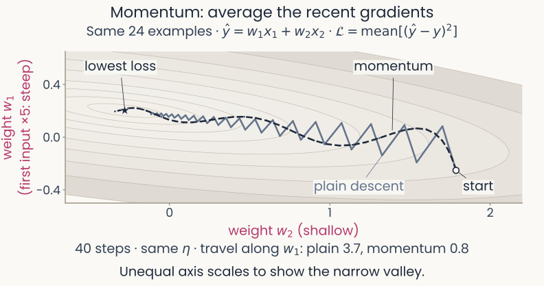
Contours of a made-up loss over two weights shaped like a long, narrow valley, steep across (w1, vertical) and shallow along (w2, horizontal). From the same start, 40 steps each at the same learning rate: plain gradient descent zigzags across the valley in many sharp turns; momentum swings in a few wide, smooth arcs toward the minimum. Sideways travel: 12.1 for plain descent, 4.8 for momentum
Open full-size figure
- Loss , a narrow valley, 25 times steeper along . One learning rate for both: a step that moves overshoots along , so plain descent zigzags
- Momentum averages recent gradients (): the back-and-forth pushes along cancel
Slide 9
Adam: momentum plus a step size for each weight
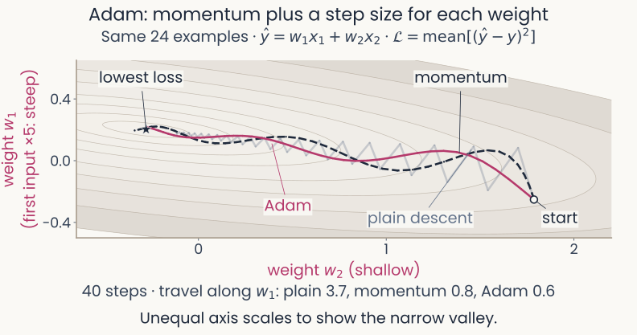
The same narrow valley and start. Plain gradient descent zigzags faintly in the background; momentum swings in wide arcs as on the previous slide; Adam follows one smooth curve down the valley to the minimum. Sideways travel: plain 12.1, momentum 4.8, Adam 2.2
Open full-size figure
- Each weight's step is divided by its typical gradient size: both weights move at a similar pace
- Steps to 1% of the starting loss, each at its best learning rate: 26 plain, 10 momentum, 5 Adam
Slide 10
Adam: the update
θ: all weights and biases · operations are per weight · Adam's first-step correction omitted
- , the running average of the gradient (its first moment): which way each weight has been pushed lately, like a rolling ball's velocity
- , the running average of the squared gradient (its second moment): how large each weight's gradients usually are, whatever their sign
- Each weight in effect gets its own learning rate, , set by its gradient history. Gradients that keep the same sign over recent steps give steps near ; gradients that flip sign give small steps
- Defaults , work on most problems; prevents division by zero
Slide 11
The learning rate, measured
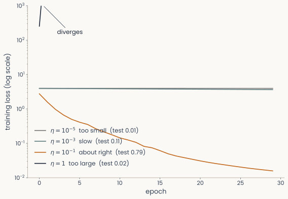
Training loss on a log scale against epoch for four learning rates of one network reading the six object categories from 100 monkey IT sites. At 10 to the minus 5, dotted grey, the loss barely falls (test accuracy 0.18); at 10 to the minus 3, dashed blue, it falls slowly (test 0.62); at 0.1, solid magenta, it falls to about 0.015 (test 0.91); at 3, dash-dotted black, it jumps off the top of the axis in the first epoch and diverges
Open full-size figure
- Running example: read the category (animal, face, fruit, house, vehicle, object) from 100 IT sites of the assignments' recordings
- 64 ReLU units, plain gradient steps; four runs differing only in
- Too small: the loss barely moves. Too large: it explodes
- is a hyperparameter, set by us. Good values span orders of magnitude: sweep on a log scale
Slide 12
Does what a network learned hold for images it never saw?
Generalization: doing well on data that played no part in training
Slide 13
Recall: train on some images, test on others

Two panels for a readout of animate versus inanimate from 480 monkey IT neurons, trained on 102 images and tested on 306. Left: accuracy bars; with true labels, training 1.00 and test 0.96; with shuffled training labels, training 1.00 and test 0.56 on average, below a dashed majority-class line at 0.63. Right: histogram of the test accuracy over 1,000 label shuffles, centred near 0.55, with its 95th percentile marked near 0.67 and the true-label test accuracy, 0.96, far to the right
Open full-size figure- Recall the baselines lecture: a probe (readout) of animate vs inanimate from 480 IT neurons. Fit it on 102 images, test it on 306 others
- With the true labels: 1.00 on the training images, 0.96 on the test images. Then shuffle the training labels and fit the probe again
Slide 14
A perfect training score can hide poor generalization
Two panels for a readout of animate versus inanimate from 480 monkey IT neurons, trained on 102 images and tested on 306. Left: accuracy bars; with true labels, training 1.00 and test 0.96; with shuffled training labels, training 1.00 and test 0.56 on average, below a dashed majority-class line at 0.63. Right: histogram of the test accuracy over 1,000 label shuffles, centred near 0.55, with its 95th percentile marked near 0.67 and the true-label test accuracy, 0.96, far to the right
Open full-size figure- Shuffled labels were fit perfectly too (1.00), yet scored only 0.56 on new images
- Zhang et al. (2017), ImageNet: random labels fit for 95% of 1.2 million photos; new photos 0.1%, chance
- Generalization gap: training accuracy minus test accuracy
- When does a fit carry over to new data? How do we measure and improve it? (minute paper)
Slide 15
Training fits a function from inputs to outputs

A model neuron with two inputs, x1 and x2, with weights w1 and w2, summed with a bias b into z, passed through the nonlinearity g, giving the output a = g(w1 x1 + w2 x2 + b)
Open full-size figure- A neuron, a readout or a network computes an output from an input:
- Training chooses the parameters so that matches on the training pairs
- Generalization asks whether is also right for inputs it never saw
- With hundreds of inputs we cannot draw ; with one input we can
Slide 16
Too rigid, or too flexible
Computed: 10 noisy samples of a sine curve, after Bishop (2006), Fig. 1.4
![Four panels, each with the same 10 magenta points scattered around a dashed sine-shaped curve, and a blue fitted curve. Degree 0: a flat line, training error 0.63, error on new points 0.76. Degree 1: a falling straight line, 0.48 and 0.56. Degree 3: a curve close to the dashed one, 0.19 and 0.33. Degree 9: a curve through every point that swings far off between and beyond them, training error 0.00, error on new points 0.86. Open green circles: 25 of the new points the error on new points is measured on](../images/L09/01_poly_degree.svg)
Four panels, each with the same 10 magenta points scattered around a dashed sine-shaped curve, and a blue fitted curve. Degree 0: a flat line, training error 0.63, error on new points 0.76. Degree 1: a falling straight line, 0.48 and 0.56. Degree 3: a curve close to the dashed one, 0.19 and 0.33. Degree 9: a curve through every point that swings far off between and beyond them, training error 0.00, error on new points 0.86. Open green circles: 25 of the new points the error on new points is measured on
Open full-size figure- A readout we can draw: a polynomial fit to 10 training points (magenta), tested on new points (green)
- Degree : up to bends. Underfitting: too rigid. Overfitting: fitting the noise
- , in units of . Training RMSE keeps falling; test RMSE falls, then rises
Slide 17
Same model, more examples
Computed: the same curve and noise, after Bishop (2006), Fig. 1.6

Four panels of the same degree-9 polynomial fitted to more and more noisy points from the dashed sine-shaped curve. N equals 10: the curve swings far off, error on new points 0.86. N equals 15: close to the dashed curve, 0.34. N equals 30: 0.35. N equals 100: the fitted curve follows the dashed one, training error 0.28, error on new points 0.31. Open green circles: 25 of the new points the error on new points is measured on
Open full-size figure- The same degree-9 polynomial, fitted to 10, 15, 30 and 100 points from the same curve
- With 10 points it passes through every one; with 100 it cannot, and follows the curve instead
- Overfitting depends on flexibility relative to the number of examples
Slide 18
Same model, different training sets
Computed: the polynomial example; 20 fits shown, numbers from 2,000 training sets
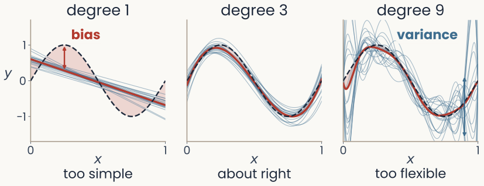
Three panels, each with 20 thin blue curves fitted to 20 training sets of 10 noisy points, their average in red, and the true curve dashed. Degree 1, too simple: the lines agree with each other but their average misses the curve; the gap between the average and the true curve is shaded and labelled bias. Degree 3, about right: the fits cluster tightly around the true curve. Degree 9, too flexible: the average lies on the true curve but the individual fits swing wildly
Open full-size figure
- Draw many training sets from one source (same 10 inputs, new noise each time) and fit each. Thin blue lines: one fit per training set; red: their average; dashed: the true curve
- Degree 1: the fits agree, but their average misses the curve: bias, the shaded gap . Degree 9: right on average, but the fitted curve itself changes from one training set to the next: variance
Slide 19
Bias and variance
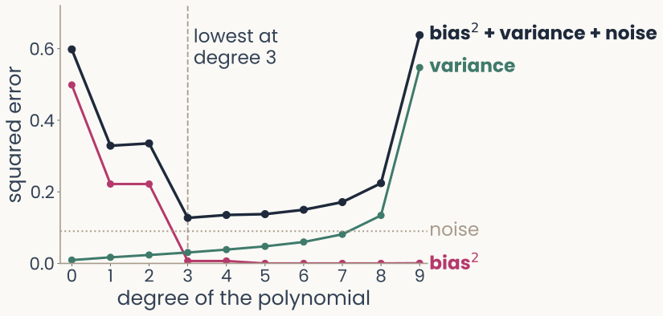
Squared error against the degree of the polynomial, 0 to 9. Bias squared in magenta falls from 0.50 at degree 0 to near 0 from degree 3 on. Variance in green rises slowly, then steeply to 0.55 at degree 9. Their sum plus the noise, in dark ink, is U-shaped, lowest at degree 3, 0.13. A dotted line marks the noise, 0.09
Open full-size figure
Computed: 2,000 training sets
- : the true curve; : the fitted prediction at ; averages over training sets. : the noise variance, (squared errors here, not RMSE)
- Bias falls and variance rises with the degree: the best model balances the two, here at degree 3
Slide 20
Many dimensions, few examples
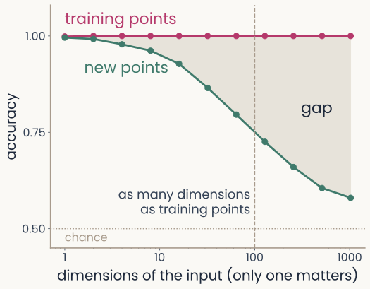
Accuracy against the number of input dimensions on a log axis, from 1 to 1024, with 100 training points. Training accuracy, in magenta, stays near 1.0 throughout. Accuracy on new points, in green, starts at 1.0 and falls to about 0.58 at 1024 dimensions; the shaded gap between the curves widens. A dashed line marks 100 dimensions, as many as training points
Open full-size figure
- Simulated points: the label is the sign of the first input; every other input is random noise. A linear readout, 100 training points
- Training accuracy stays near 1.0; accuracy on new points falls toward chance
- The curse of dimensionality (baselines lecture): the examples needed grow quickly with the number of dimensions. With 1,024 weights and 100 examples, the readout fits the training labels partly through the noise dimensions
- The fix: a representation, or a limit on the readout, that ignores the irrelevant dimensions
Slide 21
Learning a new category from five photos
![Reproduced from Sorscher, Ganguli and Sompolinsky 2022, Fig. 1A and B. A: four photographs each of two animals the network was never trained on, a coati and a numbat, and a new photograph marked with a question mark. B: the primate ventral stream from the retina to IT drawn above a deep network trained on ImageNet; each image becomes a point in the network's feature space, the labelled examples of each animal are averaged into a prototype, and a straight boundary halfway between the two prototypes labels the new image](../images/L10/pub_sorscher2022.png)
Reproduced from Sorscher, Ganguli and Sompolinsky 2022, Fig. 1A and B. A: four photographs each of two animals the network was never trained on, a coati and a numbat, and a new photograph marked with a question mark. B: the primate ventral stream from the retina to IT drawn above a deep network trained on ImageNet; each image becomes a point in the network's feature space, the labelled examples of each animal are averaged into a prototype, and a straight boundary halfway between the two prototypes labels the new image
Open full-size figure- A trained network sees 5 photos each of two new animals. Each animal's average is its prototype; a new photo takes the nearer one's label
- Why a prototype? The simplest readout, an average: a neuron could compute it
Slide 22
Five photos are enough, in a good representation
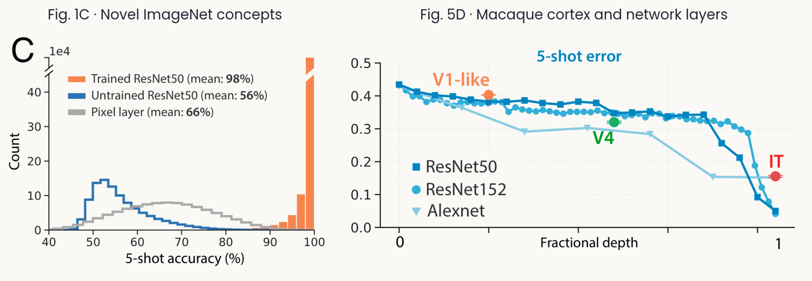
Reproduced from Sorscher, Ganguli and Sompolinsky 2022: accuracy of the prototype readout on new categories against the number of examples per category, for the trained network, an untrained network and raw pixels, and the five-photo accuracy read from monkey IT and V4 recordings compared with network layers
Open full-size figure
- New categories: 98.6% from 5 photos (1 photo 92.0%; untrained network 56%; pixels 66%)
- Monkey IT: 84% (AlexNet 80%, ResNet-50 93%). Category geometry predicts the errors
Slide 23
How do we choose a model without fooling ourselves?
Slide 24
Three data splits
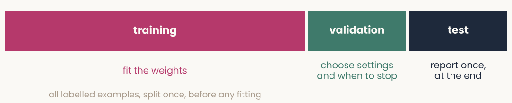
A horizontal bar split into three parts. Training, the largest part, in magenta: fit the weights. Validation, in green: choose settings and when to stop. Test, in dark grey: report once, at the end
Open full-size figure
- Training set: fit the parameters , every number set from data (weights, biases, a polynomial's coefficients)
- Validation set: choose the hyperparameters on it (settings we pick, such as ). Few examples? Cross-validation holds out each part of the training set in turn; leave-one-out, one example at a time
- Test set: used once, at the end. Never choose anything on the test set, or its score is too optimistic
- Often broken: ImageNet results are tuned on the set they report; on a fresh test set, 11–14 points lower
Slide 25
Learning curves: when to stop training
![Two panels against epoch, 0 to 400, for a network reading out the six object categories from 100 monkey IT sites, trained on 300 images with a fifth of their labels redrawn at random. Left, loss: training loss in magenta falls to near 0; validation loss in green is lowest near epoch 20, about 0.56, then rises to about 0.97. Right, accuracy: training accuracy rises to 1.0; validation accuracy is highest, 0.82, at epoch 8, marked by a dashed line labelled checkpoint kept, and drifts down to about 0.78. A dotted line marks chance, one in six](../images/L10/it_learning_curves.svg)
Two panels against epoch, 0 to 400, for a network reading out the six object categories from 100 monkey IT sites, trained on 300 images with a fifth of their labels redrawn at random. Left, loss: training loss in magenta falls to near 0; validation loss in green is lowest near epoch 20, about 0.56, then rises to about 0.97. Right, accuracy: training accuracy rises to 1.0; validation accuracy is highest, 0.82, at epoch 8, marked by a dashed line labelled checkpoint kept, and drifts down to about 0.78. A dotted line marks chance, one in six
Open full-size figure- The running readout (six categories, 100 IT sites), 300 training images, a fifth of their labels redrawn at random: validation turns as the network fits the wrong labels
- Early stopping: stop when the validation score stops improving. Keep the checkpoint (saved parameters) with the best validation score: accuracy here, epoch 8; by loss it would be 20
Slide 26
Why stop before the bottom of the training loss?

Left: contours of the training loss of a two-weight neuron fit to 8 noisy examples (solid magenta) and of its loss on 20,000 new points (dashed green), each with its own lowest point marked by a star. A gradient-descent path starts at an open circle, passes close to the green star, where it is marked stop here, and continues to the magenta star. Right: the training loss falls throughout, while the loss on new points is lowest at step 11 and then rises as training continues
Open full-size figure- Two weights, 8 noisy examples: the lowest training loss and the lowest loss on new points sit at different weights
- Stop where the loss on new points is lowest, before the weights fit the noise
Slide 27
In PyTorch: keep the best checkpoint
best_acc = -float("inf") # best validation accuracy so far
for epoch in range(num_epochs): # one epoch = one pass over the training set
model.train() # training mode (dropout on)
for X, y in train_loader: # one minibatch at a time
optimizer.zero_grad() # clear last step's gradients
loss_fn(model(X), y).backward() # loss on this batch, then backprop
optimizer.step() # update every weight
model.eval() # evaluation mode (dropout off)
with torch.no_grad(): # no gradients needed to score
correct = sum((model(X).argmax(1) == y).sum().item()
for X, y in val_loader) # count right answers
val_acc = correct / len(val_loader.dataset)
if val_acc > best_acc: # better than every earlier epoch?
best_acc = val_acc
torch.save(model.state_dict(), "best.pt") # save the weights: a checkpoint
model.load_state_dict(torch.load("best.pt")) # end: reload the best weights
Slide 28
A test accuracy from few images is imprecise
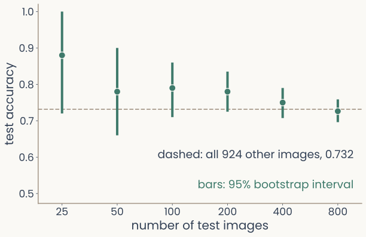
Test accuracy of the running readout, six categories from 100 monkey IT sites, against the number of test images, 25 to 800, on a log axis. Each point has a vertical bootstrap interval. With 25 test images the interval runs from 0.76 to 1.00; with 800, from 0.83 to 0.88. A dashed line marks the accuracy on all 924 other images, 0.86
Open full-size figure
- The running readout as a logistic regression, trained on 300 images; the dashed line is its accuracy on all 924 other images (0.86)
- The bootstrap (baselines lecture): resample the test images with replacement; the middle 95% of the accuracies is a 95% confidence interval
- With 25 test images, the accuracy could be anywhere from 0.76 to 1.00; with 800, from 0.83 to 0.88
- Compare models on enough test images that their intervals do not overlap
Slide 29
How do we make a network generalize better?
Slide 30
A penalty on the weights
Computed: the 10 points of the first example, after Bishop (2006), Fig. 1.7

Four panels of the degree-9 polynomial fitted to the same 10 points, with an increasing penalty. No penalty: through every point, swinging far off, error on new points 0.86. Lambda 10 to the minus 7: a smooth curve close to the dashed one, 0.34. Lambda 10 to the minus 3: smooth, 0.34. Lambda 1: an almost flat line, training error 0.49, error on new points 0.61. Open green circles: 25 of the new points the error on new points is measured on
Open full-size figure- The degree-9 polynomial on the same 10 points, now with a penalty on the size of its coefficients (weight decay): test RMSE falls from 0.86 to 0.34. Too large a underfits
Slide 31
Without a penalty, a readout's weights keep growing
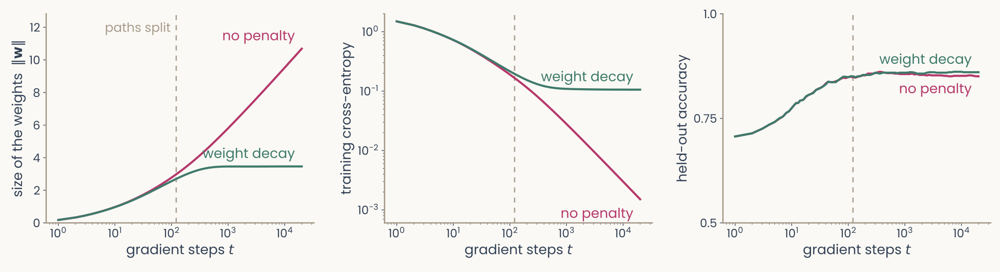
Two panels for the running readout, six categories from 100 IT sites, as a logistic regression trained on 300 images. Left: the size of the weights against gradient steps on a log axis; without a penalty it keeps rising, to about 10.7; with weight decay it levels off near 3.5. Right: the training cross-entropy on a log axis; without a penalty it falls toward zero, to 0.0015; with weight decay it levels off near 0.11
Open full-size figure
- All 300 training images are already right: a longer only adds confidence, so grows
- A penalty stops it. Same training accuracy; the penalty limits the confidence
Slide 32
More data, or altered copies of it

Four versions of one photograph of a pink orchid: the original; flipped left to right; cropped and enlarged; and with its colour faded and raised
Open full-size figure- More training examples always help generalization: the same model overfits less (the polynomial with 10 vs 100 points)
- No more data? Make some. Data augmentation: train on altered copies that keep the label (flipped, cropped, recoloured). AlexNet trained on 2,048 versions of each photo
- An augmentation states what should not change the label: a flipped orchid is still an orchid
Slide 33
Regularization: penalties and dropout

Three copies of the same small network: in the first two, a different random half of the hidden units is switched off for one training step each, with their connections removed; in the third, at test time, all units are on
Open full-size figure- With all the data used, regularization: limit how freely the network fits the training data, like the L2 weight penalty
- Dropout: at each training step, switch off a random half of the hidden units; all are on at test time
- In practice a mix: L2, dropout, sometimes L1. Each cuts the network's freedom to fit noise
Slide 34
A model of a neuron: regression with a penalty
![Two panels for one monkey IT recording site and 512 features of the trained network's late layer. Left: predicted against recorded responses for a ridge fit; training images faint grey, held-out images red, both scattered along the diagonal, R-squared 0.71 on training and 0.69 on held-out images. Right: R-squared against the penalty lambda on a log axis; with almost no penalty, training R-squared is 0.85 and held-out R-squared 0.28; as the penalty grows, training R-squared falls while held-out R-squared rises to meet it near 0.69 at the penalty chosen on the training images, then both fall](../images/L07/encoding_fit_heldout.svg)
Two panels for one monkey IT recording site and 512 features of the trained network's late layer. Left: predicted against recorded responses for a ridge fit; training images faint grey, held-out images red, both scattered along the diagonal, R-squared 0.71 on training and 0.69 on held-out images. Right: R-squared against the penalty lambda on a log axis; with almost no penalty, training R-squared is 0.85 and held-out R-squared 0.28; as the penalty grows, training R-squared falls while held-out R-squared rises to meet it near 0.69 at the penalty chosen on the training images, then both fall
Open full-size figureComputed: one monkey IT site (Bao et al. 2020), 1,224 object images, 512 late-layer units of ResNet-18; a random fifth held out
- Ridge regression: a weighted sum of the 512 units plus a bias, with the weight penalty. by cross-validation on the training images (
RidgeCV); on held-out ones
Slide 35
Characterizing neurons, biological and artificial
What do the units of a trained network respond to, and how do we measure the same in neurons?
Slide 36
Measuring a tuning curve
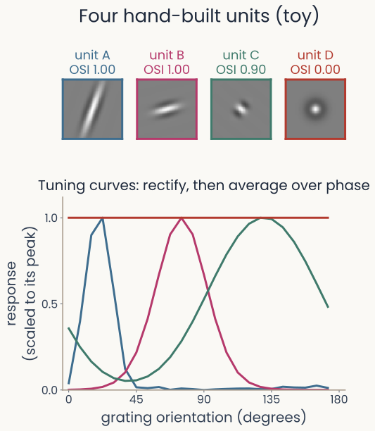
Top: the weights of four hand-built units, three Gabors at different orientations and window lengths, labelled with orientation selectivity indices 1.00, 1.00 and 0.90, and a centre-surround unit with index 0.00. Bottom: their tuning curves to gratings at 24 orientations, each scaled to its peak; the three Gabors peak at different orientations, the long one narrowly, the short one broadly, and the centre-surround unit is flat
Open full-size figure
- Show a unit gratings (light and dark stripes) at many orientations, as we would show an animal, and record its response. Here, four units built by hand
- Top: each unit's weights, its receptive field (the input pattern that drives it). A Gabor is a grating seen through a smooth (Gaussian) window
- Orientation selectivity index (OSI), (max − min) / (max + min) of the responses: near 1 when the weakest response is near zero. Bandwidth: the half-width of the tuning curve at half its height
- A and C both have indices near 1, yet C is far more broadly tuned: the index does not measure tuning width
Slide 37
Rectify before you average over phase
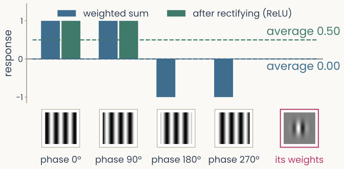
Bar chart for one Gabor unit and a grating at its preferred orientation shown at four phases: the weighted sums are plus one, plus one, minus one, minus one and average to zero; after rectifying, the responses are one, one, zero, zero and average to one half. Thumbnails of the four gratings and of the unit's weights sit under the bars
Open full-size figure
- A grating also has a phase, where its stripes sit. Shift them half a cycle and the weighted sum flips sign; averaged over phase, the sums cancel
- Rectify first, with a ReLU, and the average keeps the unit's preference. Rectifying stops positive and negative sums from cancelling
Slide 38
Real V1 receptive fields, described by Gabors
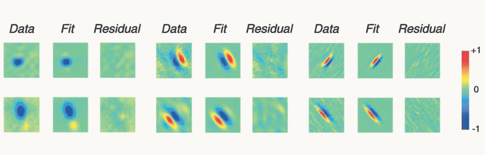
Reproduced from Ringach 2002, Fig. 2: six macaque V1 simple cells in three blocks. Each row shows the measured receptive field (Data), the best-fitting two-dimensional Gabor (Fit) and what is left over (Residual). The fields range from round blobs to elongated stripes of alternating sign; each fit reproduces its field's shape, and the residuals are faint, unstructured speckle. A colour bar runs from minus 1, blue, through 0, green, to plus 1, red
Open full-size figure
- Map a V1 simple cell's receptive field (Data), fit a Gabor by least squares (Fit), then look at the Residual
- The fit captures the shape; the residual is mostly noise, so , the score of the fit, is high
Slide 39
Two numbers for a field's shape
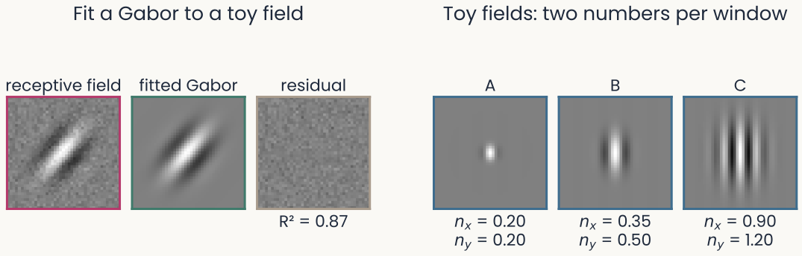
Left, a toy receptive field with pixel noise, the Gabor fitted to it, and the residual, which is only noise; R-squared 0.87. Right, three noise-free toy Gabors: A with nx 0.20 and ny 0.20, a small spot; B with nx 0.35 and ny 0.50, a few short stripes; C with nx 0.90 and ny 1.20, many long stripes
Open full-size figure
- Keep two numbers: width across the stripes and length along them, both in cycles of the stripes. A is a spot smaller than one stripe; C holds many long stripes
- Why these two? They give a field's shape at any size: few cycles, a blob; many, a detector narrowly tuned to one orientation
Slide 40
Where V1 simple cells sit
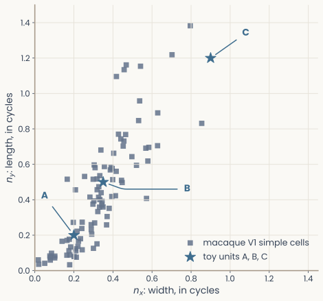
Scatter of Gabor width nx against length ny, both in cycles, for 93 macaque V1 simple cells: most cluster near the origin, below about 0.6 on both axes, with a few longer fields. Three blue stars mark the toy units A, B and C of the Gabor-fit slide: A and B sit among the cells, C lies beyond most of them
Open full-size figure
- Ringach (2002) fit Gabors to 93 simple cells of macaque V1 (cells that respond to a grating only at some phases) and released the fits
- Most cells sit below 0.6 on both axes (medians 0.32 and 0.41): a window of one or two stripes
- Toy unit C, with many long stripes, lies beyond most real cells
- The same two numbers can place any receptive field on this plot, a network unit's included
Slide 41
V1 cells and a trained network's first layer
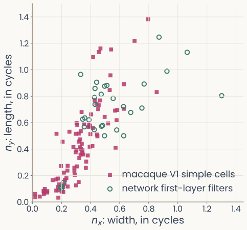
Scatter of Gabor width nx against length ny, both in cycles: macaque V1 simple cells cluster near the origin; the network's first-layer filters that a Gabor fits well overlap them but sit systematically larger
Open full-size figure
- Filled squares: macaque V1 simple cells. Open circles: AlexNet's first-layer filters, each fit by a Gabor
- The same two numbers place a cell and a network unit on one plot
- Do the network's filters look like V1 cells, and where do they differ?
Slide 42
How selective for objects? One IT site at a time
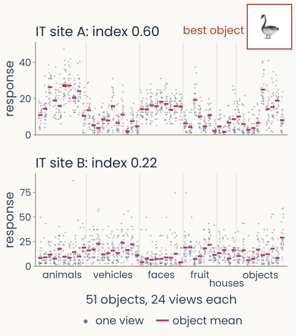
Responses of two IT sites to 51 objects, 24 views each: dots for single views, bars for object means. Site A, object selectivity index 0.60, has object means that differ widely, highest for a swan, shown as a thumbnail; site B, index 0.22, has object means that barely differ compared with the spread of the views
Open full-size figure
- A deeper unit's weights are not an image, so we measure selectivity from responses. Show each object from many views, and split the variance of one IT site (one electrode's recording) into between objects and within an object
- Object selectivity index = between / total: near 1 when the response depends on which object, near 0 when the object means barely differ compared with the spread of the views
- Compare the spread of the bars (object means) with the spread of the dots (views) in each plot
- This ranks units by how they respond. Whether a unit is needed is another measurement: next slide
Slide 43
Is a selective unit needed? Remove it and see
- Selectivity: how a unit responds. Necessity: what a readout loses without it. Different measurements
- Ablation: set a unit's activity to zero and measure the drop in a readout's accuracy
- Control: remove the same number of randomly chosen units. Selective units matter more only if removing them costs more than removing random ones
- Keep the readout fixed, and you ask whether it relied on those units. Refit it, and you ask whether the remaining units can still separate the classes
Slide 44
Shortcut learning: texture over shape
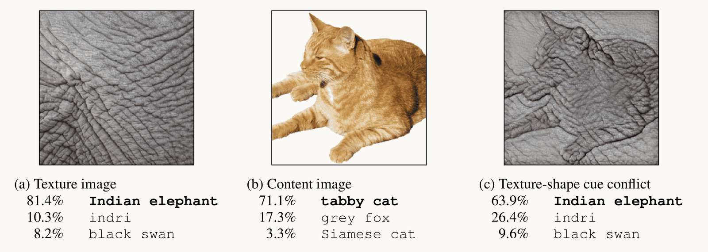
Reproduced from Geirhos et al. 2019, Fig. 1: three images with ResNet-50's top three answers. (a) A texture image of elephant skin: Indian elephant 81.4 percent, indri 10.3, black swan 8.2. (b) A photograph of a tabby cat: tabby cat 71.1 percent, grey fox 17.3, Siamese cat 3.3. (c) The cat's shape with elephant-skin texture, a texture-shape cue conflict: Indian elephant 63.9 percent, indri 26.4, black swan 9.6
Open full-size figure
- Out of distribution (OOD): test images from a different source than the training images
- Shortcut learning: a cue that predicts the label in training but not in the world (texture, background)
- Cue-conflict images like (c): people chose shape in 95.9%, ResNet-50 (an ImageNet network) in 22.1%
Slide 45
Recap
- Training at scale: minibatches give cheap, noisy gradients; a schedule shrinks the step; Adam adapts it per weight. Sweep the learning rate first, on a log scale
- Generalization: performance on data the model never saw. Overfitting depends on flexibility relative to the number of examples, and on the representation
- Splits: train to fit, validate to choose and to stop, test once, with a bootstrap interval
- Regularization: weight decay, data augmentation, dropout and early stopping can reduce overfitting. Choose their settings on validation data
- Characterizing a unit: tuning curves (rectified before averaging over phase), Gabor fits placed beside V1 cells, object selectivity from responses. Ablation with a random control asks whether a unit is needed
- Beyond the test set: shortcuts fail on new kinds of images. Large networks can memorize random labels and still generalize on real labels
Slide 46
Further reading for the research trail
Optional: a few research-trail entries over the semester. Any paper mentioned in any lecture qualifies.
- Kingma & Ba ICLR 2015: two running averages per weight give a step size that needs little tuning
- Hubel & Wiesel J Physiol 1962: orientation tuning and simple and complex cells in cat visual cortex
- Ringach J Neurophysiol 2002: Gabor fits to 93 V1 simple cells, the data behind our scatter plot
- Sorscher, Ganguli & Sompolinsky PNAS 2022: object-manifold geometry predicts few-shot learning
- Recht, Roelofs, Schmidt & Shankar ICML 2019: a new ImageNet test set costs 11–14 percentage points
- Geirhos et al. Nat Mach Intell 2020: shortcut learning across vision, language and medicine
Slide 47
Minute paper
Submit on Canvas → Minute papers → Minute Paper 11 (access code read out in class).
Write three brief points in your own words:
- In plain words: how can a readout score 100% on its training images and still do poorly on new ones?
- Something you do not yet understand, or a question still open
- Another idea you found interesting, and why it matters for brains, behavior or AI
Credit for a thoughtful attempt, not for being correct.